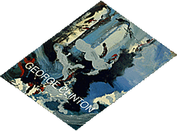

|
Catalogs of George
Clinton's fine art are now available. Some catalogs have been personally
signed by George.
The catalog contains 18 of Clinton's pieces in an
8.5" x 11"
glossy format, in addition to a foreward by Jim Reed,
Curator of the Riverside Art Museum.
Catalogs are $50.00 ($150.00 signed and uniqued by George) plus $4.95 shipping and handling. Phone orders are available at 850-671-4700, while supplies last.
|

|